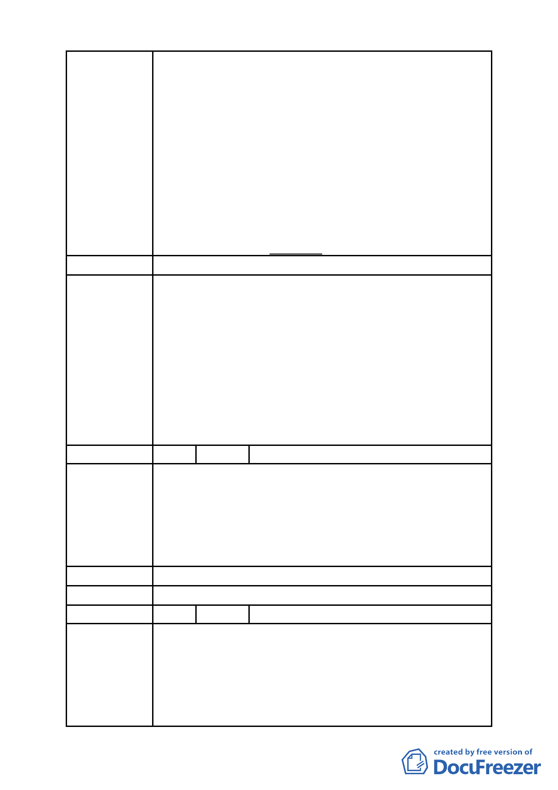

區，多數均存在著住宅功能的使用，違反現行之使用
規定，故本區若再以限制 2/3 商業使用比例要求，將
與市場使用現況嚴重乖離，並損及原重劃配地時對於
原所有權人之權益。
二、另大彎北段之商業區、娛購區已有部份土地依現行之
法令完成開發建築，為避免不切現況發展，故建議視
覺廊道「街廓編號 A1、A2、B1、B2 街廓內臨接退縮
五公尺人行道其兩側每單一土地細分規模之建築基地
及C2街廓內須留設至少一處南北向生態及山稜視景廊
道，其兩側建築物高度比依前開規定辦理，自指定退
縮 地 界 線 起 35 公 尺 範 圍 內 之 建 築 物 高 度 比 不 得 超 過
1.5」之規定，應予取消。
建 議 辦 法 （同上）
一、大彎北段地區係屬「2010 年臺北好好看」之科技產業
軸帶，基於其規劃理念係為提供產業進駐誘因、帶動
城市發展活力，故區內「2010 年臺北好好看」申請案
之「土地使用」部分，其因申請好好看所獲容積獎勵
委員會決議
部分同意得比照商三所允許之使用項目，惟不得作住
宅之使用；至於其餘部分仍應依本區 92 年都市計畫之
規定辦理，不得作住宅之使用。
二、有關臺北好好看申請案之建築物高度管制部分，經委
員會決議採不記名投票方式表決結果為「建築高度 70
公尺（上限）、視覺廊道 40 公尺（下限）」。
編 號 3 陳情人 吳議長碧珠 99.4.9 依陳情人之意見轉述
一、「促進都市再生 2010 年臺北好好看」申請案所要求 99
年 3 月前必須取得建築執照及 99 年 9 月前必須開工等
陳情理由
時程管制，市府應詳細檢討內部行政整合協調時間，
於扣除不可歸責於申請人部分之時程後予以延長。
二、全案應秉持市府推案之美意，朝專案變更方式儘速完
成各階段之審議作業。
建 議 辦 法 （同上）
委 員 會 決 議 所提建議業已錄案供委員審議參考。
編 號 4 陳情人 奇泰建設有限公司等 4 家
一、「金泰段臺北好好看開發案」幾經折衝，已悉依台北
市政府都市發展局 (以下簡稱「都發局」)98 年 10 月
陳情理由
30 日北市都規字第 09836521507 號函規定表訂規範
內容、格式，於民國 98 年 11 月 3 日送請台北市都市
計畫委員會(以下簡稱「都委會」) 辦理公展在案、俟
後獲台北市政府府都規字第 09838862600 號函於 98
- 59 -